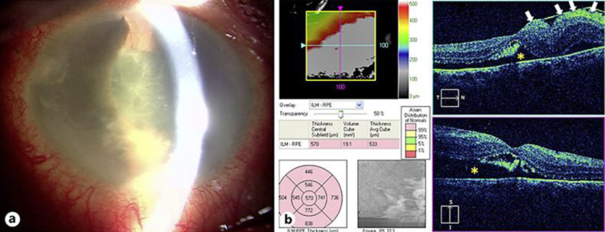
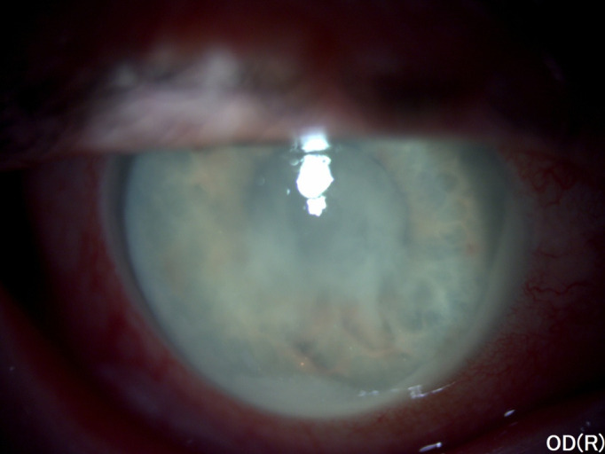
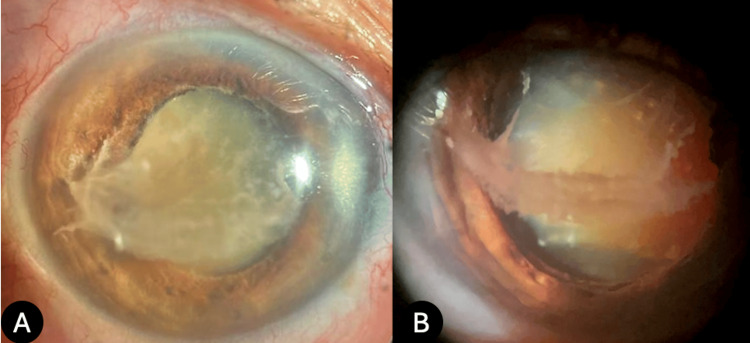

1443 — Viêm màng bồ đào do thấu kính: phacoantigenic (bao vỡ) vs phacolytic (bao nguyên) — phân biệt với viêm nội nhãn và viêm giao cảm / Lens-induced uveitis
Tags: pattern:viem-mang-bo-dao pattern:u-hat pattern:mu-tien-phong pattern:bong-vong-mac-co-keo pattern:tang-nhan-ap pattern:sau-mo pattern:sau-chan-thuong vung:mat vung:tien-phong vung:the-thuy-tinh vung:dich-kinh protocol:den-khe protocol:UBM protocol:B-scan protocol:AS-OCT protocol:PPV
Mức chắc chắn (certainty): tổng hợp y văn (literature synthesis) — đọc toàn văn một bài tổng quan có số liệu dịch tễ/chẩn đoán/điều trị (PMC7223998), ba ca nguyên văn có ảnh (PMC8697789, PMC7506203, PMC12457044). Tỷ lệ 3–23% kết hợp viêm màng bồ đào giao cảm lấy từ tổng quan; phần chọn đường mổ theo tình trạng bao là suy luận (inference) từ cơ học mô, đã ghi rõ.
Vì sao bài này quan trọng: đây là một trong những chẩn đoán dễ bỏ sót nhất trong nhãn khoa viêm — chỉ 6/140 ca được chẩn đoán đúng trên lâm sàng trong một tổng quan (PMC7223998). Bệnh nhân đến với mắt đỏ, đau, mủ tiền phòng sau mổ hoặc với đục thể thủy tinh già; nếu gọi là viêm nội nhãn thì chọc dịch kính + kháng sinh, còn nếu gọi đúng thì phải lấy vật liệu thấu kính. Bỏ sót dẫn tới dính mống mắt, glôcôm, bong võng mạc co kéo, và 3–23% kết hợp viêm màng bồ đào giao cảm — một biến chứng mù hai mắt.
1. Tổng quan bệnh học – cơ chế hình ảnh – vì sao mủ tiền phòng lại vô khuẩn
1.1. Thấu kính là mô “ẩn miễn dịch” — và protein của nó vẫn là tự kháng nguyên
- Bình thường: thấu kính không có mạch máu, không thần kinh, tách khỏi tuần hoàn từ thời kỳ bào thai; protein crystallin nằm sau bao thể thủy tinh (lens capsule) — một hàng rào vật lý + miễn dịch.
- Khi bao vỡ (chấn thương, mổ, rách bao tự phát): crystallin tiếp xúc hệ miễn dịch → mất dung thứ tế bào T (T-cell tolerance) → phản ứng u hạt (granulomatous) quanh vật liệu thấu kính, tạo u hạt dạng đới (zonal granuloma) với ba lớp: trung tâm là vật liệu thấu kính, giữa là tế bào khổng lồ/đại thực bào, ngoài là lympho–xơ. Đây là phacoantigenic uveitis (tên cũ “phacoanaphylactic endophthalmitis” — không phải phản ứng IgE, nên tên cũ bị bỏ).
- Khi bao còn nguyên nhưng thấm (cataract chín/già): protein phân tử lượng cao rò qua bao còn nguyên vẹn vào tiền phòng → đại thực bào nuốt protein, bít bè củng mạc (trabecular meshwork) → glôcôm góc mở gọi là phacolytic glaucoma. Dịch tiền phòng có đại thực bào to, tròn — chính là “tế bào” gây giả mủ (pseudohypopyon).
- Vì sao mủ vô khuẩn: “mủ” ở đây là protein thấu kính + đại thực bào + fibrin, không có vi khuẩn; vì vậy cấy âm tính và kháng sinh không cải thiện — nhưng steroid giảm viêm tạm trong khi vật liệu thấu kính vẫn còn.
- Vì sao IOP có thể bình thường rồi tăng vọt: trong ca minh họa của tổng quan, IOP 9 mmHg lúc đầu (viêm làm giảm tiết thủy dịch) rồi 42 mmHg sau 2 ngày khi bít bè + viêm tăng. Một lần đo IOP bình thường không loại trừ glôcôm do thấu kính — đây là điểm chốt của bài.
1.2. Ngưỡng định lượng đã có (và chỗ còn trống)
| Tình huống | Con số | Ý nghĩa thực hành | Nguồn |
|---|---|---|---|
| Chẩn đoán đúng trên lâm sàng | 6/140 ca | Đây là bệnh dễ bỏ sót nhất trong viêm màng bồ đào | PMC7223998 |
| Glôcôm do thấu kính ở người đục thể thủy tinh tuổi già | 22% khi đến cơ sở chuyên khoa tuyến tỉnh (Ấn Độ nông thôn) | Đục thể thủy tinh để lâu là yếu tố nguy cơ chính | PMC7223998 (dẫn Kothari) |
| Kết hợp viêm màng bồ đào giao cảm (SO) | 3–23% ca LIU | Liên quan trực tiếp tới chỉ định cắt bỏ nhãn cầu — phải khám mắt bên | PMC7223998 |
| IOP trong glôcôm do thấu kính | bình thường đến 90 mmHg | Không dùng một ngưỡng IOP để loại trừ | PMC7223998 |
| Mắt bỏ vì glôcôm do thấu kính được chẩn đoán đúng | 21/138 mắt | 117/138 ca còn lại không được chẩn đoán đúng | PMC7223998 (dẫn Flocks) |
| Phẫu thuật MSICS cho LIU | 78,8% đạt BCVA ≥ 20/40 ở ngày 40 | Lấy vật liệu thấu kính là điều trị hiệu quả, không cần bỏ mắt | PMC7223998 (dẫn Venkatesh) |
| Thời điểm khởi phát phacoantigenic | vài ngày–vài tuần sau vỡ bao; có ca khởi phát 40 năm sau mổ đục thể thủy tinh bẩm sinh (sau một mũi tiêm nội nhãn) | Tiền sử rất xa vẫn có giá trị | PMC7383197 |
- Chỗ còn trống: không có tỷ lệ mắc chuẩn theo dân số cho LIU (tổng quan nói rõ là thiếu dữ liệu); các con số trên là tỷ lệ trong nhóm đến khám, không phải tỷ lệ quần thể.
1.3. Vì sao hình ảnh lại quyết định ở đây
- Không nhìn thấy thấu kính sau đục độ III–IV: khi đáy mắt và tiền phòng bị che, B-scan 10–20 MHz là công cụ duy nhất trả lời: vật liệu thấu kính nằm ở đâu, có bong võng mạc co kéo không, có khối sau không.
- UBM (ultrasound biomicroscopy, 35–50 MHz) thấy khiếm khuyết bao trước/sau, vị trí nhân lạc, mảnh vỏ còn lại — chính là bằng chứng “bao vỡ” để chọn phacoantigenic.
- AS-OCT thấy màng fibrin trên nội mô, độ sâu tiền phòng, dính mống mắt; OCT phát hiện bao thấu kính và túi dịch dưới bao trong cataract thể Morgagni (tổng quan nêu OCT dùng để đánh giá tính toàn vẹn bao và dịch dưới bao).
- Nguyên tắc: hình ảnh không “chẩn đoán” LIU — nó loại trừ những thứ chết người (u, bong võng mạc, viêm nội nhãn) và xác định vật liệu còn sót.
2. Mẫu hình + chẩn đoán phân biệt theo tình trạng bao và thời điểm (Gamut)
2.1. Gamut theo tình trạng bao thể thủy tinh
- Bao VỠ → phacoantigenic (phacogenic) uveitis: viêm u hạt, thường một mắt, khởi phát vài ngày–vài tuần sau chấn thương/mổ; có thể mủ tiền phòng vô khuẩn, dính mống mắt, màng fibrin; tiến triển mạn nếu không lấy vật liệu.
- Bao NGUYÊN + cataract già → phacolytic glaucoma: bệnh nhân lớn tuổi, giảm thị lực lâu, đau đỏ cấp; giả mủ, tế bào + flare mạnh, góc mở, cataract chín/Morgagni, có thể tinh thể cholesterol trong tiền phòng; IOP bình thường → 90 mmHg.
- Bao vỡ + mảnh nhân/vỏ rơi vào dịch kính → lens particle glaucoma/uveitis: sau phaco biến chứng, chấn thương; viêm tái phát, có thể bong co kéo/PVR; đây là thể hay bị gọi là “viêm nội nhãn muộn vô khuẩn”.
- Thấu kính trương phồng → phacomorphic glaucoma: cataract intumescent, tiền phòng nông, góc đóng, IOP rất cao; không mủ; xử trí khác (hạ áp + lấy thấu kính).
2.2. Gamut theo thời điểm
- 0–3 ngày sau mổ/chấn thương: nghĩ viêm nội nhãn cấp/TASS trước; LIU hiếm ở mốc này.
- 1 tuần–2 tháng: phacoantigenic kinh điển; viêm nội nhãn muộn (nấm, P. acnes) vẫn phải loại trừ.
- 2 tháng–nhiều năm: mảnh nhân sót trong dịch kính, phacoantigenic mạn, phacolytic ở cataract già; có ca 40 năm sau mổ bẩm sinh.
- Bất kỳ lúc nào: phacolytic ở người già không có tiền sử mổ — chỉ có đục thể thủy tinh lâu năm.
2.3. Câu hỏi số 1: “vật liệu thấu kính còn trong mắt không?”
- Còn: LIU là chẩn đoán hàng đầu; điều trị phải bao gồm lấy vật liệu.
- Không còn, bao nguyên, tiền phòng sạch: nghĩ nguyên nhân khác (HLA-B27, herpetic, sarcoid, lymphoma, SO).
- Không chắc: UBM/AS-OCT + B-scan; nếu vẫn không rõ → chọc tiền phòng/dịch kính tế bào học (tổng quan nêu cytology hữu ích trong viêm tiền phòng không rõ nguyên nhân).
3. Bảng so sánh phân biệt (ma trận đối chiếu)
| Thực thể (entity) | Hình ảnh/lâm sàng điển hình | Chốt vào (rule-in) | Chốt loại (rule-out) | Gợi ý xác nhận |
|---|---|---|---|---|
| Phacoantigenic uveitis | Một mắt, mủ tiền phòng vô khuẩn, màng fibrin, dính mống mắt; tiền sử vỡ bao/mổ/chấn thương | Vật liệu thấu kính/vỏ/nhân còn lại trên UBM/đèn khe + viêm u hạt quanh nó; cấy âm tính | Không còn vật liệu thấu kính, không tiền sử vỡ bao | UBM/AS-OCT; đèn khe sau giãn đồng tử; tế bào học tiền phòng |
| Phacolytic glaucoma | Người già, cataract chín/Morgagni, giả mủ, góc mở, IOP bình thường–90 mmHg | Bao nguyên + protein/đại thực bào trong tiền phòng + góc mở; đau đỏ cấp trên nền mờ mắt lâu | Bao vỡ, có mảnh nhân, góc đóng do trương phồng | Đèn khe + soi góc; B-scan; đo IOP nhiều lần |
| Lens particle glaucoma/uveitis | Sau phaco biến chứng/chấn thương; viêm tái phát; có thể bong co kéo | Mảnh nhân/vỏ thấy ở tiền phòng/dịch kính, viêm quanh mảnh; OCT/B-scan có màng co kéo | Không mảnh sót trên UBM/B-scan | UBM, B-scan, OCT; đèn khe |
| Phacomorphic glaucoma | Cataract trương phồng, tiền phòng nông, góc đóng, IOP rất cao, đau | Tiền phòng nông + góc đóng + thấu kính dày; không mủ | Góc mở, có mủ/tế bào → phacolytic/LIU | Soi góc mắt bên; AS-OCT; đo sinh trắc |
| Viêm nội nhãn cấp sau mổ | Đau tăng, thị lực giảm nhanh, mủ tiền phòng, viêm dịch kính, khởi phát 3–7 ngày | Viêm dịch kính + cấy dương; đáp ứng kém với steroid đơn thuần | Dịch kính trong, không đau nhiều, cấy âm | Chọc dịch kính cấy + nhuộm Gram; siêu âm B-scan |
| TASS (toxic anterior segment syndrome) | Khởi phát 12–48 giờ, phù giác mạc limbus-to-limbus, tiền phòng viêm, dịch kính trong, hàng loạt ca cùng lô dụng cụ | Khởi phát rất sớm + phù giác mạc lan tỏa + dịch kính trong; cải thiện với steroid | Viêm dịch kính, mủ đặc, cấy dương → nội nhãn | Đèn khe; B-scan; dịch tễ phòng mổ |
| Viêm màng bồ đào giao cảm (SO) | Viêm hai mắt sau chấn thương/mổ xuyên thấu; mắt kia cũng viêm, SRD, DALM | Mắt đối bên có viêm (tế bào tiền phòng, SRD, DALM) | Mắt đối bên hoàn toàn yên → không phải SO | Khám mắt bên mỗi lần; OCT/FA; hỏi tiền sử chấn thương |
| U hắc mạc/nội nhãn che giấu sau đục thể thủy tinh | Mờ mắt, đau nhẹ, không thấy đáy mắt; có thể kèm bong thanh dịch | B-scan: khối vòm đặc, hồi âm trung bình–cao; A-scan tương ứng | B-scan bình thường, chỉ đục thấu kính | B-scan bắt buộc trước khi kết luận LIU đơn thuần |

*(a) Đèn khe: viêm tiền phòng nặng, mủ tiền phòng ở mắt phải; (b) OCT: bong võng mạc co kéo (dấu sao vàng) do mảnh nhân thấu kính bị màng tăng sinh bao bọc trong dịch kính — ca nam 60 tuổi, 7 tháng sau một ca phaco biến chứng. Đây là lý do không được dừng ở “viêm tiền phòng”: phải tìm vật liệu thấu kính và bong co kéo. Nguồn: Case Rep Ophthalmol 2020 (PMC7506203) Fig. 1, CC BY-NC 4.0 — nguyên bản.*4. Protocol chẩn đoán – điều trị – theo dõi
4.1. Khám và chụp tối thiểu
- Đèn khe trước và sau giãn đồng tử: tìm mảnh vỏ/nhân, màng fibrin, dính mống mắt, giả mủ; ghi tế bào/flare.
- Đo IOP + soi góc (gonioscopy): phân biệt góc mở (phacolytic) với góc đóng (phacomorphic) và dính góc (viêm mạn).
- B-scan 10–20 MHz: bắt buộc khi không thấy đáy mắt; tìm mảnh nhân trong dịch kính, bong co kéo, khối u.
- UBM khi nghi vỡ bao/mảnh vỏ khuất sau mống mắt; AS-OCT khi cần đánh giá màng fibrin/độ sâu tiền phòng.
- Xét nghiệm viêm: chọc tiền phòng/dịch kính (cấy, nhuộm Gram, tế bào học) khi không chắc hoặc không đáp ứng steroid 48–72 giờ; tế bào học giúp thấy đại thực bào nuốt protein thấu kính.
4.2. Điều trị — nguyên tắc “lấy vật liệu gây bệnh”
- Kiểm soát viêm và IOP trước mổ: corticoid tại chỗ (prednisolone acetate 1% mỗi 1–2 giờ khi nặng), atropine 1% giãn đồng tử; hạ áp: ức chế carbonic anhydrase, chẹn beta, mannitol/osmotic khi IOP rất cao.
- Lấy vật liệu thấu kính: phaco/ECCE/MSICS nếu còn trong bao; rửa tiền phòng khi mảnh nhỏ; PPV khi mảnh nhân/vỏ trong dịch kính hoặc có PVR/bong co kéo.
- MSICS cho LIU: 78,8% đạt ≥ 20/40 ngày 40, ít loạn thị và rẻ hơn phaco — lựa chọn tốt khi bao mỏng, dây chằng yếu (PMC7223998).
- Không cắt bỏ nhãn cầu chỉ vì LIU: tổng quan nhấn mạnh lấy thấu kính tốt hơn bỏ mắt; 117/138 mắt bỏ vì glôcôm do thấu kính lẽ ra có thể cứu.
- Sau mổ: tiếp corticoid giảm liều, theo dõi IOP (nguy cơ tăng áp do corticoid — bài 1411), khám mắt bên nếu có chấn thương/mổ xuyên thấu (nguy cơ SO).
- Mảnh nhân nhỏ trong dịch kính, viêm nhẹ và đang giảm: có thể theo dõi bằng corticoid (tổng quan); không theo dõi nếu có viêm nặng, PVR, bong võng mạc.
flowchart TD
A[Mat do, dau, mu tien phong hoac giam thi luc + bat thuong thau kinh] --> B[Den khe + do IOP + soi goc]
B --> C{Co vat lieu thau kinh con lai hoac bao vo?}
C -->|Co| D[Phacoantigenic hoac lens particle: UBM + B-scan, lay vat lieu]
C -->|Khong| E{Bao nguyen + cataract chin + goc mo?}
E -->|Co| F[Phacolytic glaucoma: ha ap + lay thau kinh]
E -->|Khong| G{Goc dong + thau kinh truong phong?}
G -->|Co| H[Phacomorphic: ha ap + lay thau kinh]
G -->|Khong| I[Loai tru nhiem nhuan: cham dich kinh cay + khang sinh neu nghi]
D --> J[Sau mo: corticoid giam lieu + theo doi IOP + kham mat ben]
F --> J
H --> J
I --> J
4.3. Theo dõi và ngưỡng
- IOP: đo mỗi lần khám, đặc biệt ngày 1–3–7 sau mổ và tuần 2–6 (giai đoạn viêm + corticoid); IOP ≥ 25 mmHg hoặc tăng ≥ 10 mmHg so nền → điều trị, không chờ.
- Viêm: tế bào/flare phải giảm rõ trong 1–2 tuần sau khi lấy vật liệu; không giảm → tìm mảnh sót, nhiễm trùng, SO.
- Đáy mắt: OCT + B-scan ở tháng 1 và 3 nếu có mảnh nhân trong dịch kính hoặc mổ phức tạp; B-scan ngay khi không thấy đáy mắt.
- Mắt bên: khám mỗi lần trong 3 tháng đầu nếu có chấn thương/mổ xuyên thấu (SO có thể khởi phát 80% < 3 tháng, 90% < 1 năm — bài 1438).
5. Biến thể bình thường và cạm bẫy
- Cạm bẫy 1 — gọi mủ vô khuẩn là “viêm nội nhãn”: chọc dịch kính + kháng sinh trong khi vật liệu thấu kính vẫn còn → viêm tái phát, dính mống mắt. Cấy âm + đáp ứng steroid tạm là gợi ý LIU, nhưng chẩn đoán nằm ở việc tìm vật liệu.
- Cạm bẫy 2 — tin một lần IOP bình thường: ca trong tổng quan có IOP 9 mmHg rồi 42 mmHg sau 2 ngày. Đo lại, và đo cả hai mắt.
- Cạm bẫy 3 — bỏ sót SO: 3–23% LIU kết hợp SO; mắt bên “hơi viêm” là dấu hiệu chết người. Không bao giờ cắt bỏ nhãn cầu khi chưa khám kỹ mắt bên và chưa loại trừ SO.
- Cạm bẫy 4 — không B-scan vì “chỉ là cataract”: đục thể thủy tinh dày có thể che u hắc mạc/bong võng mạc; ca bong lỗ rách + melanoma ở bài 1441 là ví dụ. B-scan trước khi kết luận.
- Cạm bẫy 5 — phaco trên bao mỏng, dây chằng yếu: bao thể thủy tinh trong LIU mỏng, giòn, dễ rách bao, tuột dây chằng, mất nhân vào dịch kính; cân nhắc MSICS/ECCE hoặc PPV thay vì phaco “cố định”.
- Cạm bẫy 6 — corticoid kéo dài không kiểm soát: giảm viêm nhưng gây tăng nhãn áp/glôcôm do corticoid (bài 1411) và che dấu nhiễm trùng; luôn có ngưỡng giảm liều và lịch đo IOP.
- Cạm bẫy 7 — “mảnh nhân nhỏ thì kệ”: mảnh nhỏ đang giảm viêm có thể theo dõi; nhưng mảnh lớn, viêm nặng, PVR phải lấy — nếu không sẽ bong co kéo như ca PMC7506203.
6. Tự lượng giá — Blind Quiz (mở trên Pages để tự đoán trước)
Ca 1 — Nam 83 tuổi, nông dân, đau nhức mắt phải vài ngày; đã biết cataract chín mắt phải 3 tháng trước. Thị lực sáng tối, IOP 50 mmHg, giác mạc phù, giả mủ, thấy hạt trắng lơ lửng trong tiền phòng và vùng đồng tử.

- Câu hỏi: Chẩn đoán là viêm nội nhãn hay bệnh do thấu kính? Cơ chế nào giải thích mủ vô khuẩn? Xử trí cấp?
Bấm để hiện đáp án
- Phacolytic glaucoma (glôcôm do thấu kính tan): cataract chín + IOP 50 mmHg + giả mủ + hạt trắng; protein phân tử lượng cao rò qua bao còn nguyên, đại thực bào bít bè → góc mở, viêm vô khuẩn.
- Xử trí: hạ áp (CAI, chẹn beta, osmotic), corticoid + atropine, rồi lấy thấu kính (phaco/ECCE/MSICS) — không chọc dịch kính kháng sinh nếu không có bằng chứng nhiễm trùng.
- Bẫy: IOP có thể bình thường lúc đầu (viêm giảm tiết) rồi tăng vọt; đo lại nhiều lần.
- Nguồn ảnh: Rom J Ophthalmol 2021 (PMC8697789) Fig. 3, CC BY 4.0 — nguyên bản.
Ca 2 — Nam 60 tuổi, 7 tháng sau một ca phaco biến chứng (phải cắt dịch kính trước và khâu IOL xuyên củng mạc). Viêm nặng, đục dịch kính, đã dùng steroid tại chỗ + uống nhưng vẫn tiến triển; nay có bong võng mạc co kéo.
- Câu hỏi: Vì sao viêm không dứt dù đã dùng steroid? Cần tìm gì trên mổ? Kết cục?
Bấm để hiện đáp án
- Vật liệu thấu kính còn trong dịch kính: PPV thấy mảnh nhân ~60% kích thước nhân bình thường, bị màng tăng sinh bao bọc — chính là ổ kháng nguyên nuôi viêm và gây PVR/bong co kéo.
- Xử trí: PPV + lấy mảnh nhân (lấy qua vạt củng mạc–giác mạc phía trên), rồi corticoid tại chỗ + toàn thân; võng mạc gắn sau 1 năm.
- Bài học: viêm tái phát dai dẳng sau mổ phaco biến chứng = nghĩ LIU do mảnh nhân, không phải “viêm vô căn”.
- Nguồn ảnh: Case Rep Ophthalmol 2020 (PMC7506203) Fig. 1, CC BY-NC 4.0 — nguyên bản.
Ca 3 — Nam 76 tuổi, mắt phải mờ + đau 3 tuần; cataract hai mắt 9 năm, mắt trái đã mổ. Không chấn thương. IOP 15 mmHg, giác mạc trong, không KPs, nhưng có màng fibrin trắng từ bờ mống mắt tới nội mô, tế bào + flare; nhân thấu kính vàng rơm, đặc, kết tinh, không còn vỏ hóa lỏng. B-scan: đục thấu kính dày, echo điểm lấm tấm di động ở dịch kính trước, võng mạc gắn.

- Câu hỏi: Đây có phải viêm nội nhãn? Vì sao đây vẫn là LIU dù bao trước còn nguyên? Cần làm gì trước khi mổ?
Bấm để hiện đáp án
- Không phải viêm nội nhãn: không KPs, không mủ đặc, echo dịch kính mảnh, võng mạc gắn; hình ảnh là phản ứng fibrin + vật liệu thấu kính rò — thể LIU không điển hình (tên bài: “retrolental opacity”).
- Vì sao vẫn là LIU: nhân đặc, kết tinh, mất vỏ lỏng = protein cô đặc rò qua bao mỏng; màng fibrin là phản ứng với protein thấu kính.
- Trước mổ: B-scan/UBM xác nhận không có khối sau, không bong; corticoid tại chỗ làm dịu viêm; rồi lấy thấu kính (nhân đặc, bao mỏng → cân nhắc MSICS/ECCE).
- Nguồn ảnh: Cureus 2025 (PMC12457044) Fig. 1, CC BY 4.0 — nguyên bản.
Bài liên quan chéo
- 1438 – Viêm màng bồ đào giao cảm (SO) (3–23% kết hợp LIU; mắt bên)
- 1436 – Bệnh Vogt–Koyanagi–Harada (bong thanh dịch hai bên, hắc mạc dày)
- 1425 – Viêm nội nhãn sau tiêm nội nhãn (phân biệt viêm nhiễm vs vô khuẩn)
- 495 – Nấm ngoại sinh sau mổ/tiêm vs TASS (mốc 12–48 giờ, phù limbus-to-limbus)
- 1411 – Tăng nhãn áp do corticoid nội nhãn (theo dõi IOP khi dùng corticoid kéo dài)
- 1402 – Bong võng mạc sau viêm nội nhãn (bong do viêm: lỗ hoại tử vs màng xơ)
- 445 – Bong võng mạc (PVR và bong co kéo)
- 411 – Siêu âm nhãn cầu (B-scan/UBM: kỹ thuật và cạm bẫy)
Ảnh
- Tên file:
1443_viem-mbd-thau-kinh_<Modality>_<PMCID>.jpg; nguồn + giấy phép từng ảnh ởimages/CREDITS.md. - Cả ba ảnh dùng nguyên bản, không crop/ghép/đổi màu (có ảnh CC BY-NC).
- Ảnh không tải được (paywall/cấm tải) → dẫn link trong
sources.md, không dùng ảnh license mơ hồ.
Không dùng để chẩn đoán độc lập khi chưa có người hướng dẫn.